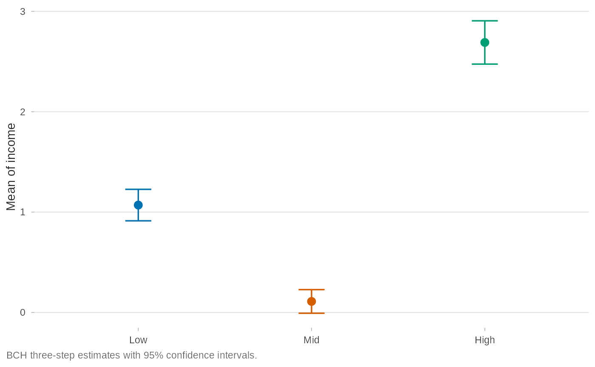
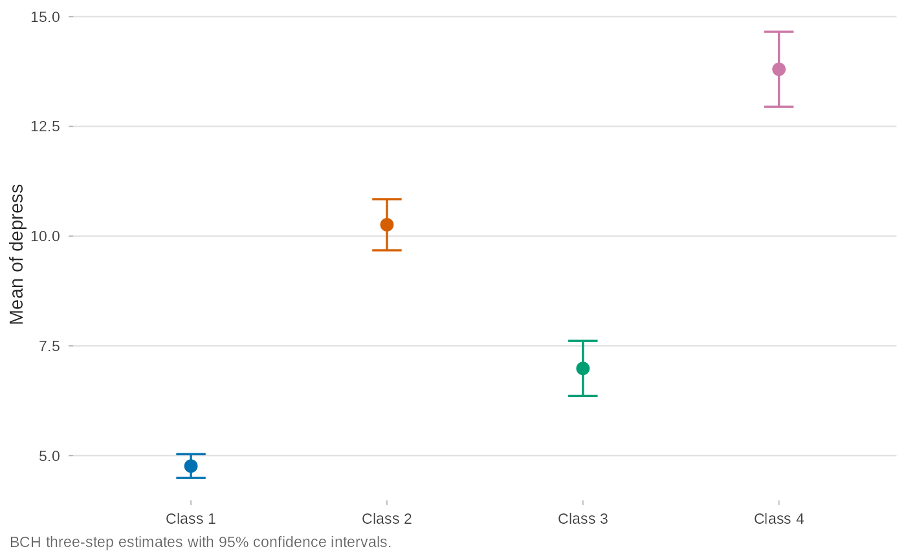
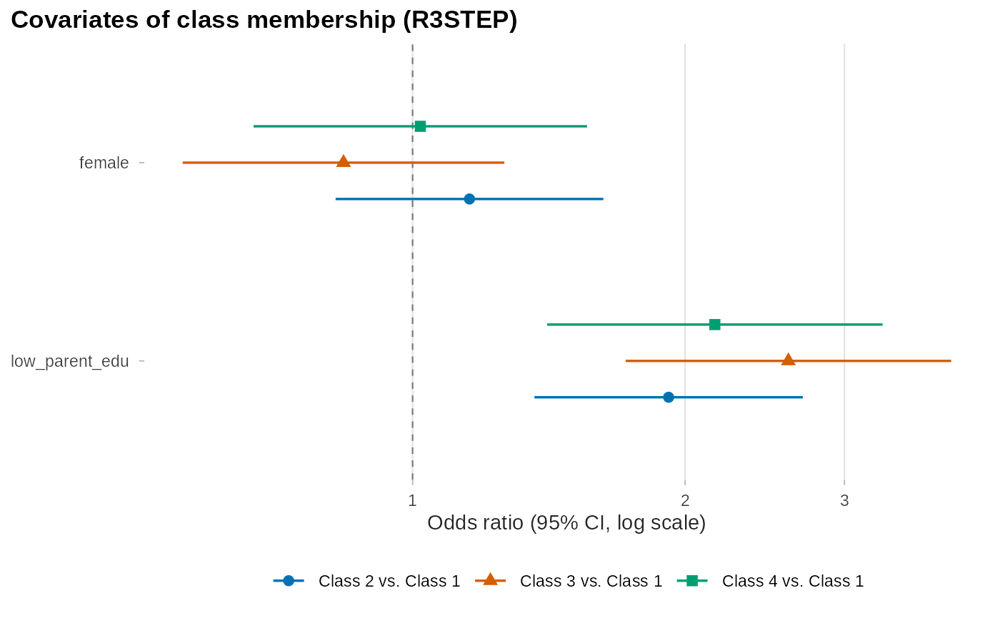
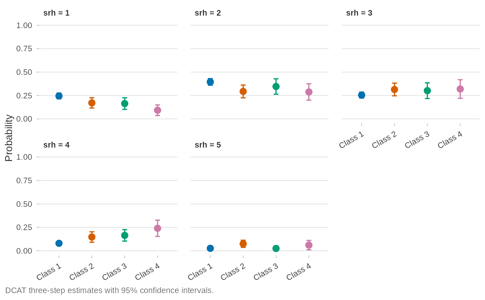

Plot auxiliary-model results
autoplot-auxiliary.Rdggplot2 figures for the results of the three-step auxiliary models and the bootstrap likelihood-ratio test:
bch(): class-specific means of the distal outcome with confidence intervals;dcat(): class-specific probabilities of every category of the distal outcome with confidence intervals (one panel per category);r3step(): forest plot of the odds ratios of class membership (each class against the reference class) with confidence intervals, on a log scale;blrt(): histogram of the bootstrap likelihood-ratio statistics with the observed statistic and the bootstrap p-value.
Usage
# S3 method for class 'latentmix_bch'
autoplot(object, level = 0.95, labels = NULL, ...)
# S3 method for class 'latentmix_dcat'
autoplot(object, level = 0.95, labels = NULL, ...)
# S3 method for class 'latentmix_r3step'
autoplot(object, level = 0.95, labels = NULL, intercept = FALSE, ...)
# S3 method for class 'latentmix_blrt'
autoplot(object, bins = 30, ...)
# S3 method for class 'latentmix_bch'
plot(x, ...)
# S3 method for class 'latentmix_dcat'
plot(x, ...)
# S3 method for class 'latentmix_r3step'
plot(x, ...)
# S3 method for class 'latentmix_blrt'
plot(x, ...)Arguments
- object, x
- level
Confidence level of the intervals.
- labels
Optional class labels, one per class.
- ...
Ignored by
autoplot(); passed toautoplot()byplot().- intercept
R3STEP: include the intercepts.
- bins
BLRT: number of histogram bins over the range of the bootstrap statistics.
Value
autoplot(): a ggplot object. plot(): the same object, invisibly.
Details
plot() draws the figure and returns it invisibly.
Examples
# result objects hold plain values, so they can be built (or saved and reloaded)
# without Julia; here a BCH result with three classes
b <- structure(list(name = "income", means = c(1.07, 0.11, 2.69), se = c(0.08, 0.06, 0.11)),
class = c("latentmix_bch", "latentmix_aux"))
autoplot(b, labels = c("Low", "Mid", "High"))

data(aces)
# \donttest{
# depressive symptoms and covariate effects across the four ACE classes
m <- lca(aces, starts_with("ace_"), K = 4)
#> Starting Julia ...
autoplot(bch(m, aces, depress)) # means with 95% CIs

autoplot(r3step(m, aces, c(female, low_parent_edu), ref = 1)) # odds ratios

autoplot(dcat(m, aces, srh)) # self-rated health by class

# }